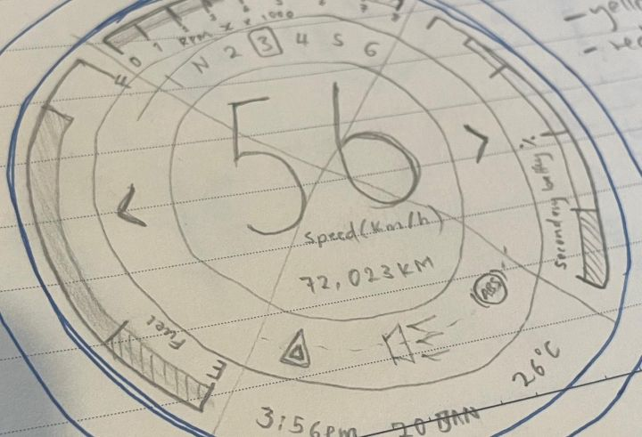

W·01 · Case study · Embedded HMI · 2025 → ongoing · status: in development
Moto Digital
Dash
A glanceable, safety-critical interface for a motorcycle dashboard on a four-inch circular OLED, designed to survive the real world: vibration, sunlight, gloves, rain and chaos.

01 Problem & constraints
Most motorcycle dashboards fail riders in one of three ways: information overload, poor glanceability, or zero flexibility. Riders need critical information instantly, without visual hunting, while moving at speed.
The design goal: a dashboard that communicates priority information in under half a second per glance, and stays usable across daylight, night riding, rain, vibration and gloves.
02 Users & insights
Who it's for
- Daily commuters
- Touring riders
- Custom / café / ADV riders
- Riders upgrading from analog clusters
What they taught me
- Speed and warnings must be readable without focus.
- RPM is pattern-based: a ring with thresholds beats small digits.
- Riders want control over what is shown; cognitive fit matters.
- Navigation must be directional, not map-based.
- Night riding punishes bright, busy interfaces.
03 UX principles
- Glanceable first. Primary values readable in under ~0.5 seconds.
- Hierarchy over density. Fewer elements, stronger prioritisation, no data soup.
- Peripheral awareness. Warnings live at the edge, not the centre.
- Contextual flexibility. Layout adapts to mode and preference without breaking hierarchy.
- Fail gracefully. Missing data never breaks comprehension.
04 Information architecture
Prioritisation is everything. The interface is organised into tiers based on how often riders need the information and how risky it is to hunt for it while moving.
05 Interaction model
No touch-first gimmicks. The system is designed for gloves and motion using a simple physical control scheme.
Interactions auto-revert to ride mode after inactivity, and nothing requires more than one step while the bike is moving.
06 UI system
Layout logic
- Centre: speed, largest text, highest contrast.
- Radial ring: RPM with thresholds, read as pattern not digits.
- Edge ring: indicators such as turn, high beam, neutral and warnings.
- Modular widgets: fuel / temp / battery / odo / trip.
Legibility & colour
- High x-height, bold numerals, no thin strokes.
- Numeric clarity over style; tested from helmet posture distance.
- Red = immediate danger only. Amber = caution. Green/blue = informational.
- OLED-safe palette, dark-first to reduce glare.
07 Customisation as UX
Customisation is framed as cognitive fit: riders can tailor the interface to their riding style without ever breaking the information hierarchy.
- Layout presets: Minimal / Touring / Sport.
- RPM redline and shift-light behaviour.
- Widget assignments and units (km/h, mph).
- Contrast modes and OLED-friendly palettes.
Rule: customisation never changes core hierarchy. Speed and warnings stay dominant.
08 Navigation UX
Smart restraint: the dash shows glanceable navigation prompts while the phone does the heavy lifting. No maps, no scrolling, no clutter. Riders don't read maps at speed, they glance for the next move.
09 Edge cases & failure modes
UX doesn't stop when things go wrong. The interface prioritises comprehension and clear recovery:
- Lost CAN/sensor → placeholder + warning.
- Low voltage → dim UI, warning first.
- Overheat → simplified view + thermal alert.
- Night/day → auto-adjust with manual override.
Avoid flashing unless critical; keep speed and warnings available; always say clearly when a data source is lost.
10 Outcome & what's next
This project demonstrates designing under real hardware constraints: safety-critical hierarchy, non-touch interaction, and customisation that doesn't dissolve into chaos. It's honest about its stage: renders, flows and final screens land here as they're produced.